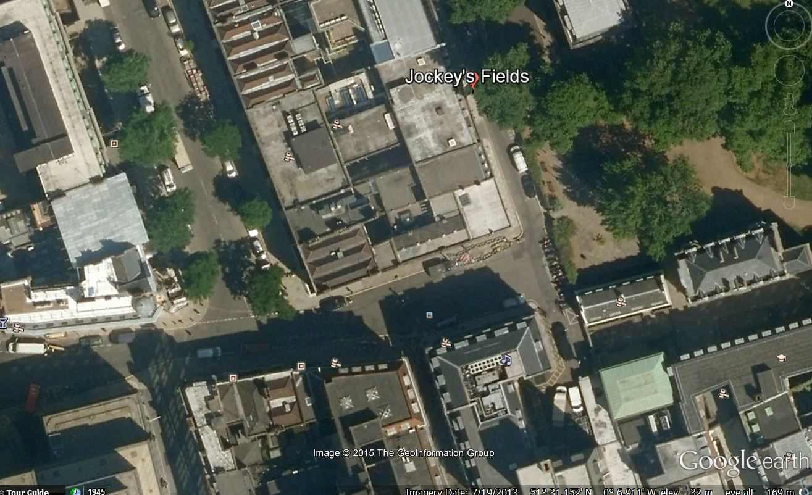

| 私の探偵ソーンダイク | |
| リチャード・オースティン・フリーマン | |
| Bito Shizu (2015) | |
私の探偵ソーンダイク
Note on Dr. John Thorndyke
R・オースティン・フリーマン
探偵小説について
The Art of the Detective Story(1924)
R・オースティン・フリーマン
魔法の小箱
THE MAGIC CASKET (1927)
R・オースティン・フリーマン
目次
「私の探偵ソーンダイク」には、リチャード・オースティン・フリーマンの二つのエッセイと、一つの短編が入っています。
最初のエッセイ「私の探偵ソーンダイク」は、フリーマンが犯罪の科学捜査というものに目覚めたきっかけについて書かれています。さらに、それをテーマとする探偵小説を書くために、科学者探偵ソーンダイクが誕生した過程と、彼がどのような特徴を持つ探偵であるかが説明されています。
二つ目は、少し長いエッセイ「探偵小説について」です。探偵小説とはどのようなものであるべきか、フリーマンの考えが示されています。一九二四年に書かれたものです。
このエッセイは、エリート主義的な雰囲気で始まる出だしの部分をはじめ、ちょっと、引いてしまいそうな記述もありますが、一九二四年当時、まさに英国社会のエリートであったフリーマンの生の声であると思いますので、そのように聞いてみることにしました。その結果、フリーマンが探偵小説に対して抱いていた熱い想いが強烈に聞こえて来て、彼に対する筆者の想いもだんだん中味が濃いものになってきました。
三つ目の「魔法の小箱」は短編小説です。日本人が登場します。一九二七年に出版された短編集「魔法の小箱」の中の作品です。フリーマンは日本に興味をもっていたようで、日本人についての記述も面白いものです。
Note on Dr. John Thorndyke
R・オースティン・フリーマン
このエッセイのテーマは、私の探偵小説の主人公であり、中心人物であるドクター・ジョン・ソーンダイクである。ここで、彼の起源と、彼が誕生することになったいきさつを簡単に説明する。
ジョン・ソーンダイクの起源を見つけるためには、私が最後の試験の準備をしていた医学生の時まで、少なくとも時間を五十年 後戻 りしなければならない。詳しい説明は省くが、その当時、私は医学の法律的な側面と、法律の医学的側面に、特に注目していた。そして、教科書の中でも、特に図解されたケースから、そのドラマチックな性質に強い印象を受けた。法医学は、あらゆる種類の法律的問題に関して人間の体が問題になる。その主題は人に対する全ての種類の犯罪、全ての種類の暴力的な死と肉体的損傷を含む。 縊 死 、 溺 死 、 毒 死 、その結果。自殺の問題と他殺の問題、身元の特定と生存者への権利の帰属問題。それ以外にも、たくさんの非常にドラマチックな可能性を秘めた問題があるが、フィクションを書くためには、適当でない問題もある。そして、記録されたケースのうちで、図解によって記録されたケースはスリルを伴って、私に最も強い関心をかき立てた。身元が問題になった、ティックバーン事件(the Tichbourne Case)、ラゲリー事件(the Rugeley Case)やマデリン・スミス事件(the Madeline Smith Case)などの毒殺のケース、謎の失踪事件や、長く忘れられていたユージン・アラムの犯罪(the Eugene Aram Case)などこれらのケースが全て、厳密に科学的な精確さで図解され、説明され、分析されていた。そして、それらを読んだとき、法医学という課題が興味の対象として私の中に形成されて、強い感情が生まれ、忘れられない印象が残った。
しかし、それは直ちに結果を生んだわけではない。私は試験にパスして、卒業して、生きていく手段を見つけなければならなかった。従って、これらの興味深い課題は、忘れられることはなかったが、必要が生じたときに表に出てくる準備をして、しばらくの間私の心の整理棚に仕舞い込まれたままになっていた。フロイト博士なら無意識と呼んだかもしれない。結局、健康を損なったことで医者をやめて文学を仕事にするまで、約二十年間そこに止まっていたことになる。
文学を仕事にしようと決めた時、私の古い関心が再び心に浮かんできた。やはり医者であるコナン・ドイルは、不朽のシャーロック・ホームズを創造し、華々しく賞賛に値する成功をおさめた。その業績を考えて、私は少し種類の違った探偵小説を生み出すことは可能かどうか自分に尋ねた。法医学に基づき、ある程度ドラマ的な効果を犠牲にしても、現実世界における事実、すなわち科学的事実が基礎になり、登場人物と出来事以外はフィクションではない物語。私は「可能である」という結論に達して、こころの中でそのアイデアについて、あれこれ考え始めた。
そして、私の探偵小説の性質を決めたもの、ついでに言えば、ジョン・ソーンダイクの性質を決めることに影響があったのは、私がウェストミンスター眼科病院で働いていた時の経験である。そこで、私は患者を暗い部屋に連れて行って、彼らの目を検眼鏡で検査して、屈折のエラー推定値を出して、それらの間違いを矯正する試験的なメガネを作った。完璧な矯正に到達すると、そのための式が処方箋に具体的に書かれて、メガネ屋に送られた。
さて、私がそれらの処方箋を書いていた時、多くの場合、特に、より複雑なケースにおいて、眼鏡のための式とメガネそのものが、絶対に確実な個人のアイデンティティ、すなわち身元の記録であるということが、頭に浮かんだ。例えば、そのような眼鏡が列車の中で見つかって、その製作者が分かったら、その列車で旅行した人物の身元を特定するための決定的な証拠になるだろう。丁度その頃、私はそのような眼鏡の処方箋を題材にした物語を書いた。そして、すでに述べたようにその物語の構成は、私の探偵小説の一般的な性質だけではなく、彼を中心にしてあらすじが組まれていく主人公の性質も決定したのであった。しかし、その物語は何年間もお蔵入りになって、結局、何年か後の一九一二年に「31 ・ニュー・インのミステリー」という題名で出版された。
最初に出版された私の探偵小説は、一九〇七年に出版された「赤い拇指紋」で、その本の中で、ジョン・ソーンダイクが初めて世に出たと言うことができる。彼のことを説明しながら、同時に、どのように、何故彼があのような種類の人間になったかを説明する。
ソーンダイクに実在のモデルはいない、という話から始めよう。彼はある一定の役割を演じるために創造された。私の頭の中にあった考えは、彼は、実人生でもそれにふさわしい職業の人間であるべきだということだった。彼は法医学の専門家になるはずだったので、医者であり、且つ完全な訓練を受けた法律家でなければならなかった。身体的な面では、全ての生まれつきの利点を与えた。非常に背が高く、頑強で、筋骨たくましい。なぜなら、それらの資質は彼の職業で役に立つからだ。同じ理由で、彼は優れた視力と聴力の持ち主で、全ての医者がそうあるべきように、一般的な手仕事の器用さも備えていた。ハンサムで堂々とした風采、古風で均整のとれた顔、鼻はギリシャ鼻である。ところで、彼の抜群の容姿は、私の好みというだけではなく、探偵小説の他の作家が生み出した醜いモンスターに対する抵抗の意味もあった。一般的に、一流の人物は見栄えの良い男性である傾向があるのではないだろうか。
精神的には、ソーンダイクはきわめて正常である。彼は、不思議な 直感力の持ち主ではないし、超常的な精神的資質の持ち主でもない。ただ例外的に鋭い推理力を持った、様々な知識を備えた非常に知的な人間で、科学的想像力という資質に恵まれていた。科学的想像力という言葉の意味は、生まれついての研究者、詳細な証拠が明るみに出る前に、問題の基本的な性格を見抜く洞察力のことである。しかし、彼が結論に達するのは、普通の推理を通してである。読者は事実を知らされたときにその跡をたどることができる。推理の連続性と複雑さは、時として、捜査の最後に説明を必要とするかもしれない。
ソーンダイクは、著名な専門家としての威厳を損なうような異常性を持ち合わせていないし、変わり者でもない。あえて言えば、『トリチノポリ両切り葉巻』を特別に好むということくらいである。態度においては、静かで、無口で自制心があり、際立って秘密主義であるが親切である。感傷的ではなく、時々乾いたユーモアのセンスを発揮することがある。ソーンダイクは私にとって、そのような人である。
彼の年齢について。４ キングス・ベンチ・ウォークの玄関口から最初に読者の前に登場したとき、彼は三十五歳と四十歳の間だった。それは三十年前なので、今は六十五歳を過ぎているはずであるが、そうではない。たとえ私と一緒に年を取らせることにしても、年齢からくる病弱を負わせる必要はないのだが、実際には、私は彼が年を取ることにブレーキをかけることができるのである。結局のところ、いつになっても、おそらく彼は五十歳以上ではないだろう。
さて、ソーンダイクがどのように仕事をするかについて。彼の方法はシャーロック・ホームズ流派の探偵たちとは少し異なっている。もっと技術的で専門的である。ソーンダイクは犯罪の捜査をする者であるが、スコットランド・ヤードの手法は、彼には相応しくないし、可能でもない。彼は法医学者であり、彼の方法は法医学的なものである。犯罪の捜査において、二つの全く異なったアプローチの方法がある。
一つは、山のような 細 々 したありふれたことについての注意深く骨の折れる調査である。容疑者や他の人々の動きについての聞き込み、証人を 尋 問 して、時間や場所について彼らの供述をチェックして、失踪した人間を探す、等々。最終的に問題の解決を明るみに出すため、山のような状況証拠を集めるのが目的で、素晴らしい手法であることは、警察の成功が示している。そして、我々の同時代の少なくとも一人の探偵小説作家によって用いられた手法である。しかし、基本的に、それは警察の手法である。
もう一つの方法は、物理的に証明が可能な証拠として価値の高い事実を探し、結果的に、それが重要な決定的証拠になる。この方法は、それに相応しいケースで警察によって採用されている。指紋はこの種の証拠である。そしてもう一つの例は、ガッターリッジ殺人事件(the Gutteridge murder)の解決方法によって提供されるものである(ガッターリッジ事件は、フリーマンがこのエッセイを書いた当時の出来事で、警察官が殺された事件)。このケースでは、カートリッジ・ケースを顕微鏡によって検査して、殺人は特定のリボルバーで行われたことが証明された。そして、そのリボルバーの持ち主が起訴されて、有罪になった。
これがソーンダイクの手法である。人間よりも物を調べること。彼自身の目だけでなく、誰の目にも見える物理的な事実の確認である。そして彼が探す事実は、医師の訓練を受けた人間の目にしか見えない事実、という傾向がある。
ソーンダイクの取り巻きの二人、ジャービスとポルトンについて何か言うべきであると感じている。前者について言えば、彼は、探偵小説につきものの、ナレーターであるにすぎない。読者の中には、ドクター・ジャービスが理解力がなさすぎると文句を言う人がいる。しかし、それが彼の機能なのである。彼は誤解の専門家である。全ての事実を観察して記録して、その意味を理解することには完全に失敗すること、それが彼の仕事なのである。それによって、読者に必要な情報を全部与えて、そしてソーンダイクにその意味を説明するチャンスを与える。
ポルトンは、少し違うカテゴリーに属する。誰か実在の人物にヒントを得たわけではないが、私の心の中では、彼は二人の実在の人物に 繋 がっている。一人は、ミスター・ポラードで、私が学生だった頃に、病院の博物館のラボラトリーの助手だった人である。彼は私に技術的に価値のある情報をたくさん教えてくれた。もう一人は、携帯時計と、置時計の製作者で、名前をパースンズと言った。親しい人々には、アンクル・パースンズとして知られていた。彼はロイヤル・エクスチェンジの近くの地下に店を持っていた。彼は天才で、限りなく独創的で、技術的なアイデアにあふれていた。この二人を私は、いわゆる、血のつながりはないが、ナサニエル・ポルトンの親戚だと 見做 している。
ソーンダイクに戻ると、彼のどちらかと言うと技術的な手法は、フィクションの目的としては、長所でもあり、欠点でもある。長所は、彼の事実は明らかに真実であり、そして本質的に興味深い。短所は、それらはしばしば一般的な知識ではないので、読者はそれが説明されるまで、分からないし、意味を理解することができない。しかし、これは全てのフィクションに共通なことで、登場人物や物語で全ての読者に共感され、受け入れられる種類のものはない。個人差は、物語を書くことだけではなく、読むことにも影響を及ぼすからである。
The Art of the Detective Story (1924)
R・オースティン・フリーマン
文学のジャンルの中で、犯罪や複雑なミステリーを解明するタイプの作品の文学的な地位は、ある意味で異常である。このタイプのフィクションは、現在、世界的に『探偵小説』として知られるようになっており、あまり魅力的な呼び方ではないが、この論文ではこの名称を採用することにする。批評家や文学者は探偵小説を文学の範囲内ではないと軽蔑的に退ける傾向にある。あまり教育がない、無能な物書きが、オフィスで働く少年たちや工場で働く少女たち、その他、文化や文学に趣味がない人々が読むために書いた、そのようなタイプの本だと受け取っているのである。
そのような作品がそのような作家によって、そのような読者のために書かれたという面があることは、否定しがたい。しかし、単なる質の悪さという点では、探偵小説が独占権をもっているわけではない。似たような作家によって、似たような読者のために、ラブ・ストーリーや、ロマンス、質の悪い歴史物さえ書かれている。ところが、次のような違いがある。すなわち、ラブ・ストーリーやロマンスのジャンルとしての文学的な地位は、そのジャンルの傑作によって決定されるが、探偵小説の場合は、その失敗作によって判断されるようである。探偵小説の文学としての全体的な評価は、できの悪いサンプルによって決定されてきたのである。
この違いについてどんな説明があるだろう？なぜ、そうなのか。出来の悪いラブストーリーやロマンスは、ジャンルは良いが、良質の作品に比べて欠陥があるという、作品の質によって判断される。一方、探偵小説は、裁判なしで、本来持っている罪によって、即ち、探偵小説だというだけで、だめと決めつけられているのではないだろうか。また、どのような人が、探偵小説の読者であるかについての推測も間違っている。一般的に言って、フィクションのなかで、探偵小説よりも人気があるジャンルはない。多くの有名な人々がこのタイプの読み物を読み、お気に入りの気晴らしにしていることは、よく知られている。そして、学識のある知的な人々が往々にして他のどんなタイプのフィクションよりも好んで、楽しんで、熱心に読んでいるのである。
従って、自分を文学的と思っている人々によって、探偵小説全体が軽蔑されていることの説明を、私は聞きたい。確かに、知的で文化的な人の情熱をかき立てる文学の形式は、下品なもの、馬鹿げたものではあり得ないし、不道徳なものでもなさそうである。事実、そのどれでもない。では、何故、探偵小説は結果的に、知的で文化的な人々の支持を得るのが難しいのであろうか。その説明は、おそらく探偵小説に失敗作がたくさんあるということである。例えば、初心者や愛好家が、難しくて複雑なこのジャンルを、修行の道具として採用する傾向がある。粗野な文学的な技術が、それ以外の点では、満足できる探偵小説の中にみいだされることがある。また、従来の小説を書く作家がこのジャンルを試みるとき、気質的にも訓練の面でも、相応しくないので、作品の質が落ちることもあるだろう。
このように、探偵小説はどのようなものであり得るか、あるべきか、ということによってではなく、過去に数多く粗野で不完全な作品が存在したことによって、批判的な判断が形成されてきたのである。不運なことに、この手の作品はまだたくさんあるが、決して代表的な作品ではない。最近になって、探偵小説を真剣に考える新しい流派の作家達が出てきて、スタンダードをもっと厳しく設定するようになり、彼らの作品は、構成においても制作においても、見事なものである。この現象は、最近このクラスのフィクションの人気が高くなってきたことを説明しているのではないだろうか。しかし、代表ではあるが、彼らは少数派だ。そして、ジャンルに相応しい際立った資質を発展させ、加えて、言葉遣い、物語の背景の処理、性格描写などの、一般的な文学的技量も満足出来る探偵小説があったら、それは、全てのフィクションのなかで希有な、なかなか見つからないものだろう。
優れた探偵小説が少ないことは、批評家にも、作家にも、あまり理解されていない事実によって説明される。その事実とは、すなわち、完璧に構成された探偵小説は技術的に大変難しいということである。完璧に構成された探偵小説というものは、作家に、一人の人間の中に見いだすことがまれな素質の融合を要求する。すなわち、一方で、探偵小説は創造性と芸術的な才能を要求する想像力の作品であり、もう一方では、論理的分析と緻密で鋭い推理力を要求する推理・推論の作品である。そして、これらの生来の資質に加えて、かなり広い範囲の専門知識という道具箱を要求する。その証拠は、伝統的な小説を書いている作家が時々実験的に探偵小説を書いたとき、その難しさを理解出来ていないという事実によって、明らかである。探偵小説の本質とそれが持つべき資質を完全に誤解しているという理由で、実験が失敗している。
広く行き渡っている間違いは、探偵小説は、あっと言わせる必要がある、という認識である。それは、単なる犯罪ものと混同されがちだからである。犯罪物は、悲劇的で恐ろしく、気持ちが悪くなるような出来事がテーマであり、その質は粗野で刺激の強い 扇 情 主 義 である。作家の目的は読者をぞっとさせることであり、読者はおそらく、似たような作品を読むことで鈍感になっており、反応が鈍くなっていくことに応じて、暴力の手段は徐々に過激になっていかなければならない。
狩人が次のように歌う子供のための歌がある。
『プラチナの弾丸でカバを撃ったよ。だって、鉛の弾丸を使ったら、カバの皮でぺちゃんこになっちゃうよ』
この詩は、扇情主義を 煽 る作家の態度を示している。彼の目的は、読者の精神の外皮の厚みを突き破るためには、芸術性を犠牲にしても、文学という彼の弾丸の重量と速度を調整する必要があるということだ。
ところで、批評家が扇情的な作品に反感を示してもそれに文句を言うまともな作家はいない。扇情主義は、才能のない作家が到達し、無批判な読者が受け入れる資質である。すなわち、読者の感受性を増し、より微妙な理解力を育てる高級な文学作品とは違って、扇情的な作品は、麻薬やアルコールのように、抵抗力が強くなって摂取量を増やさなければならなくなる。映画の娯楽性は、継続的に増していく扇情性のスケールに依存するようになる。あっとおどろく不思議さはやがて普通になって、もっと驚く、摩訶不思議なものによって強められる必要がある。どんな種類の構成も不可能になるまで、出来事が出来事に重なり、クライマックスがクライマックスに重なるのである。文学においても同様である。新聞の連載小説の場合、一回分は数千語か、それよりもやや少ないが、次回分の始まりを平然と無視して、どきどきするようなクライマックスで終わらなければならない。映画化された小説の中には、扇情主義の極端な形、驚くべき出来事のつながりでしかないものがある。わかりやすい筋書で切断されて、それぞれの出来事は独立した「スリル」で、それ以前の出来事を説明することなく、続いて起こる出来事を準備するわけでもない。
後者のタイプのいくつかの作品は探偵小説を装って発表され、何人かの批評家によって混同されたようである。それらの作品は、説明不可能な状況下で起こる犯罪を扱うという性質がある。探偵や、非公式の捜査官たちが、リボルバーや自動拳銃を自由に使って、車や飛行機やモーターボートであちこちに突撃し、髪の毛が逆立つような冒険が連続して起こるのである。もし、何らかの結論に達したとしたら、あまり説得力のないものであるが、このような作品を好む読者にとって、物語の興味は、付帯的なことにあって、プロットには関係ない。しかし、このような種類の作品に「探偵小説」という名前を採用することは、誤りである。なぜなら、「探偵小説」と呼ばれるタイプの作品の基本的な資質は、全く違うものである。その資質とは、どんなものか、今から考えてみよう。
探偵小説を他のタイプのフィクションから区別する特徴は、読者に提供する満足が、知的な満足であるということである。魅力的な言葉使い、ユーモア、面白い性格作り、絵のようなセッティングや感情的な場面など、良質のフィクションにあるそれらの資質は必要でないと言っているのではない。逆に、これらの全ての資質を備えているべきである。上手に、快活に話される面白い物語であるべきだ。しかし、他のフィクションにおいては、これらの資質は第一義的で主要な資質であるが、探偵小説に於いては、二義的なもの、知的興味の次に来るものであって、もし必要であれば、そのために犠牲にされるものである。探偵小説の目利きが探している楽しみというものは、彼自身が参加できる頭の体操に参加を招待されることである。そして、楽しみが優れたものであるか否かは、他のフィクションよりも探偵小説を好む読者の期待を満足させるだけの完成度があるか否かによって判断されるべきである。
かくして、質の良い探偵小説は質の良いフィクションであるという一般論については、次のように言うことができる。探偵小説の場合は、質の良いフィクションが共通に持っている資質を排除して、探偵小説を他のフィクションから区別し、特別な性格を与えている資質に特に注意を払うことにしてもいいのである。探偵小説が読者に与えようとする満足は、本来は、知的なものであると、私は言った。そこで、我々は要求されているその満足の質と、どのように供給されるのがベストであるかについて、もっと詳しく考えてみよう。まず、最初の問いは、代表的な読者の性格はどのようなものだろうか？注意深く構成された探偵小説は、どのような種類の人々に向かって書かれたのであろうか？
探偵小説は人気があることを見てきた。一般に、文学の読者はあまり批判的ではない傾向がある。彼は、良い作品も悪い作品も、公平に読んで、少なくとも技術的な構成、違いについてはっきりした認識はない。探偵小説の目利きは、他のフィクションに比べて、公然とこのジャンルを好み、批判的な注意力をもって読む。彼らは、例えば、神学者、学者、法律家、それよりも少ないかもしれないが、医者や科学者などの知的な人々の中に見いだされる。私が読者から受け取った手紙から判断して、特に熱心な人は、勉強好きで、学究肌の聖職者である。
さて、神学者、学者、法律家は共通の性質を持っている。彼らは、微妙に難解なものを好む精神の持ち主である。彼らは複雑な議論に楽しみを見いだし、弁証法的なコンテストに於いては、証明するテーマよりも、証明する方法のほうにより重きを置くものである。喜びは議論することから生まれ、証明する複雑さ、難しさに比例する傾向がある。論争者は、筋肉質の男が特別な種類の身体的努力を楽しむように、頭脳の訓練を楽しむ。そして、議論によって生まれる満足は、方法が論理的であること、推理に誤りがないこと、特に、データに関する曖昧さがないことからくるのである。
学生や、街角の論客、その他「議論の原理」というものに無知な人々は、普通、「主張による議論」と呼ばれている手段を使う。それぞれの論争者は、事実と言われているものの説明を投げつけることによって、相手を 圧 倒 しようとする。かくして、議論は主張の衝突という混沌状態において 頓 挫 する。弁証法的論争の熟練者の方法は、これと全く逆である。彼は論争のテーマをはっきりさせ、相手方と基本的なデータについて、合意を確立することから始める。神学論争は、双方が真理であると認めた命題に基づいて行われる。また、弁護士の弁論は、双方が認めた証拠から推測できる結果に関して行われる。
議論する時の知的な満足感は、データ構築の完全さによって決まり、事実についての議論はあったとしても、知的な興味はわずかなものである。しかし、議論において順序正しく理論が連続していくためには、データがはっきりと説明され、双方によってそれが合意されるまで始めてはいけない。この非常に明らかな真実が、作家によって常に見過ごされている。筋書、即ち、議論は、物理的、科学的、その他の、事実だと言われていることに基づいているが、学識のある読者は、それが事実ではないことを知っている時があって、その場合は、事実でないものから引き出された結論は無効になり、議論の知的な興味を破壊する。
その他、絶対に必要な要素は、推理の間違いをおかさないことである。結論は、必ず、前提から引き出されなければならない。それのみが唯一の可能な結論でなければならない。そして、有能な読者が非の打ちどころのない真実について何の疑いも持たないことが必要である。
ここが、探偵小説がもっとも失敗するところである。論理的な誤りにあふれており、特に 詭 弁 を 弄 するのである。才能ある捜査者によって到達し、避けられないものとして提供された結論は、読者によって単に、たくさんの可能な選択肢の中の一つに過ぎないとみなされる。作者によって「そうであったに違いない」とされることが読者によって「そうであったかもしれない」と訂正されること、それは、アンチ・クライマックスの一つである。約束され、予想された論証が単なる提案へと先細りに消滅し、議論は宙に浮いて、読者は求めていた知的な満足を得ることができない。
読者が求める満足の質を確認したうえで、次に探偵小説の構成を調べて、その満足を満たすために採用された手段について考えてみよう。探偵小説はフィクションの一般的な資質を備えていないという広く信じられている信念は無視してもよい。物語全体を通して続くラブ・ストーリーを別として、(そのようなものを書く余裕はないのだが)、探偵小説は、語りの面白さ、或いは文学的な出来栄えという点で、他のタイプのフィクションよりも劣っている必要はないし、そうあるべきでもない。メイン・テーマと矛盾したり、明快な説明を妨げる「わき筋」的な話は、もちろん認められないが、ユーモアや、絵のようなセッティング、いきいきとした性格描写、感情的なエピソードなどは、美的な理由で望ましい。しかも、巧みに使われる場合は、重大な瞬間の無意味な『偽の手がかり』やその他問題を混乱させるために使われるうんざりさせるような小細工の代わりに使うことで、読者の注意をそらせ、謎解きがあまり簡単にならないようにしてもよい。ディケンズの『エドウィン・ドルードの謎』では、天才の手腕によって、探偵小説においても、素晴らしい質のフィクションが可能であることが示されている。
さて、技術的な側面を問題にすると、探偵小説のプロットは、フィクションの装いのもとでされた議論であるということに特に注意しておこう。そして、それは特別な形の議論である。問題が説明され、その解決のためのデータが目立たないように提示され、そのつながりを隠すために、故意に場所をずらす。読者の仕事は、問題の解決が明らかになったとき、データを集めて、正しい論理の流れに沿ってそれを並べ替え、関係を確認することである。かくして、探偵小説の構成は、四つのステージに別れる傾向にある。
(１) 問題の説明
(２) 問題の解決のためのデータの提示(『手がかり』)
(３) 発見、即ち、捜査者による聞き込みの完了と彼による解決の宣言
(４) 証拠を解説して解決を証明する
(１) 問題はいつも犯罪に関わるものである。それは犯罪が魅力的なテーマだからではなく、捜査が必要になる機会が発生するからである。同様に、相応しいという理由で、人に対する犯罪は、物質に対する犯罪よりも、一般的に取り上げられる。すなわち、殺人は、実際のものであれ、未遂のものであれ、容疑であれ、通常最も相応しい題材である。というのは、犯人は、向こう側のプレイヤー(敵)であり、我々は彼が死にものぐるいで戦うことを期待するので、賭けは適当に高くなければならない。死刑に値するような犯罪は、犯人が命を賭けて戦うので、その結果、劇的な場面を描く必要が生じることになる。
(２) 作品の中心部分は、物語の語りによって占められるべきで、その過程で、データ、或いは『手掛かり』は目立たないように提示されるべきである。しかし、明快に。基本的な部分については曖昧さがあってはいけない。作家はゲームの作法において、徹底的に公正であるべきである。カードの一枚一枚が、表を上にして、読者からよく見えるように、テーブルに置かれているべきである。いかなる状況であっても、事実に関してごまかしがあってはならない。読者は、期待するものが真実であることを、明快に知っているべきである。古いタイプの物語では、中間部分が偽の手掛かりの連続で、一人の登場人物に疑いをかけ、次の人物に疑いをかけ、その次、その次と容疑者を作り出すことに費やされる傾向があった。手掛かりを忍耐強く一つ一つ追いかけて、どこにもたどり着かない。熱っぽい行動があるが、結果はない。これらは全て読者にとってはうんざりすることで、私の見解では、悪い手法である。私は、偽の手掛かりは完全に排除して、読者をナレーションで忙しくしておくことにしている。もし、氷が不愉快なほどに薄くなったら、読者の気分転換に劇的なエピソードを入れて、危険地点を安全に乗り越えさせる。読者を混乱させてミスリードする手法は、悪い手法である。それは不必要に興味をつぶすもので、全く必要ない。なぜなら、どんなにはっきりとデータが与えられても、読者はいつも間違った方向に導かれるからである。
何年か前に、実験として、私は 倒叙式 の探偵小説、「オスカー・ブロドスキー」を二部形式で書いた。第一部では、犯罪を細かく詳細にわたって描写して、それまでの出来事、動機、そして全ての 付 帯 状 況 を明らかにした。読者は犯罪が行われたのを見て、犯行の全てを知っていて、事実は全て手中にある。それ以上何も語ることはないように見えるだろう。しかし、私は、読者は犯罪に心を奪われて、証拠を見過ごすだろうと計算した。その計算は、後に読者から聞いて、正しかったことが判明した。第二部で、犯罪の捜査を描いた。それを読む読者は、事実を全て知らされていたが、それらの事実がどのような証拠であるかということは認識していなかった。
読者が、知らされた事実の証拠としての価値に気がつかないということが探偵小説を書く上での基礎になる。一般的に考えられているのは、作者は、事実を別々に、関連が分からないように見せることができる場合に限って、恐れることなく事実を公開する。そして、作家が大胆にデータを提示するほど、その物語の知的な興味は大きくなる。なぜなら、作家の 暗 黙 の了解は、事実から推理して読者は問題を解決することができる、ということである。解決が可能でなければならない。もし、プロット的に実行可能であれば、データは物語の初めに提示されるべきであり、読者は物語が語られている間、考察すべき一定量の証拠を持っていることが望ましい。主要な事実を、物語の終わり近くになって提示することは、読者に対してフェアではない。すなわち、目撃者証言のような主要な証拠を殆ど終り近くになって持ち出すのは、悪い技術であり、読者に対する一種の契約違反である。
(３) 「発見」、即ち、到達した結論を捜査者が発表することは、形式的に、疑問が終局になることである。この後で、何か新しい出来事を紹介することは、全く承認しがたいことである。読者は、自分の前に証拠と結論があって、結論は証拠に含まれているということを理解する。もしそうでなければ、構成は失敗しているのであり、読者はだまされたのである。普通、「発見」は読者にとって、驚きとしてやってきて、物語のクライマックスを形成する。そして、クライマックスの質が、それにともなう知的な説得力によっているということが重要な点である。これはよく見過ごされる点であり、特に一般の小説家が探偵小説を試みるときに、起こりがちである。読者を驚かせたいという彼らの熱意のゆえに、説得力がなければならないことを忘れてしまうのである。私の文学的な友人の一人が、特に終局が決定的で分かりやすい探偵小説についてコメントして、言った。「完璧な証明が芸術的な効果をだいなしにした」と。しかし、探偵小説においては、完璧な証明こそが芸術的な効果である。探偵小説のクライマックスの劇的な効果は、それまでに理解されていなかったたくさんの事実の重要性を読者が突然理解することによるものである。
(４) 解決の証明。これは「探偵物」の構成に特有のことである。全ての普通の小説で、クライマックス、或いは大詰めは、物語の終わりにある。しかし、探偵小説は二重の性格をもっている。ドラマチックな面白さを備えた物語があり、それに閉じ込められているのは、いわゆる、論理的な問題である。物語のクライマックスでその問題が未解決のままに終わるかもしれない。従って、作家は、捜査者という仲介を介して、証拠の分析と説明によって解決を証明しなければならない。彼は、結論は読者の知っている事実から自然に 湧 き出してきて、それ以外の結論は不可能であるということを証明しなければならない。
もし、それが満足にできれば、 鑑 識 眼 のある読者にとっては、これが本の最も面白い部分であり、作品全体の質を判断する部分である。できの悪い作品の場合、しばしば、失望とアンチ・クライマックスの気分以外何も生まれてこないことがある。例えば、作家が彼自身の問題を解決することができない時などである。古い船頭の唄にある『恐れるな、天を信じよ』という致命的なアドバイスに従って行動し、うまい説明を見つけることができるかもしれないという希望を持って、ミステリーを積み重ね、ついに、読者と収支決算をする時になって、論理的な資産がゼロであることを発見する。論証であるとされたものが、説明できないものを説明したと読者を説得するための、もっともらしい試みに過ぎないという結果になる。この種の典型的なアンチ・クライマックスは、ポーの『モルグ街の殺人』において見られる。デュパンが連れの、口に出されていない考えを追って適当な瞬間にその考えに参加する。読者は驚いて、どうすれば、そのような不可能に見える芸当を演じることができたのか不思議に思う。デュパンが説明する。しかし、彼の説明はまるで説得力がない。読者はただ驚くだけである。鑑識眼のある読者にとって、探偵小説の質の中で、全てに先立つものは、明確に結着がつくことである、ということを強調しすぎることはない。それは、他の何にもまして、読者が求めている知的な満足を生み出すもので、得ることが一番難しい資質であり、作家に、配慮と努力を要求するものである。
THE MAGIC CASKET (1927)
R・オースティン・フリーマン
ドラマチックな「魔法の小箱」事件が私達の前に姿を現したのは、チェルシーのキングス・ロードに近い場所で、観察力の鋭いソーンダイクの眼が、捨てられたバッグを偶然に見つけたことが発端だった。オープニングが、特別ドラマチックだったわけではなく、小箱そのものがドラマチックだったわけでもない。この事件のドラマチックな要素と魔法の殆どは、ソーンダイクが加えたものである。私がこの物語を記録する目的は、異常ともいえる奇妙な知識をどこからか引っ張り出してきて、予想だにしなかった方法で、即座にそれを披露したソーンダイクの並外れた能力を記録することである。
それは、霧の深い十一月のある夜のことだった。時計が八時を打って、私達は、眩しい光を放っている表通りのショーウインドウを後に、北に向かう暗くて狭い迷路のような通りに迷い込んだ。変化があまりに突然だったので二人とも深い印象を受け、ソーンダイクがいつものように楽しげにその状況を解説した。
「ロンドンは汲めども尽きない 趣 のある街だ。その多様性は限りない。一分前、我々は光の海の中を人混みに押されて歩いていた。しかし、今、この小さな通りを見たまえ。トンネルのように真っ暗で、我々の他には人っ子一人いないんだ。こんな場所では、どんなことでも起こり得る・・・」
そして、突然彼が立ち止まった。私達は、その時、小さな教会かチャペルを通り過ぎようとしていたところで、西側のドアは開いたポーチに囲まれていた。すると、観察力の鋭い私の友人がポーチに入って行って、腰をかがめた。そのとき、壁に沿った深い影のなかに、彼の目にとまった物体があることに、私も気がついた。
「何だい、それは？」後からついて行った私がきいた。
「ハンドバッグだ。問題は、このハンドバッグはここで何をしているんだろう？」
彼は教会のドアが開くかどうか試してみたが、もちろん鍵がかかっていたので、戻ってきて窓を調べた。
「明かりはついていない。鍵がかかっていて、誰も見えない。ハンドバッグは捨てられているようだ。見てみようか？」
答えを待たずに、彼はそれを拾い上げて、もう少し明るい通りまで持ってきて、バッグを調べ始めた。一目見て、バッグに何が起こったか明らかだった。もとは鍵がかかっていて、こじ開けられたに違いない跡があった。
「空っぽではない」とソーンダイクが言った。「中に何があるか見たほうがいいよ。電灯を出す間、持っていてくれ」
彼はバッグを私に渡して、習慣でいつもポケットに持っている小さな懐中電灯を探した。それは素晴らしい習慣だ。私がバッグの口を開いて持って、彼が中を照らした。中には茶色の紙で包まれた物が幾つか入っていた。ソーンダイクが中の一つを引っ張りだして、紐を解いて紙を剥がすと、中国製の陶磁器の壺が姿を見せた。それには、ビクトリア・アンド・アルバート博物館のスタンプが押されたラベルがついていて、名前と住所が書いてあった。
ミス・メイベル・ボニー
１６８ウィロー・ウォーク
フルハム・ロード ウェスト
「これは、我々が知りたいことの全部だ」ソーンダイクが言って、壺をもう一度紙で包んで優しくバッグに戻した。「持ち主に届けて、悪いことはないだろう。特に、バッグそのものも、明らかに彼女の物だからね」そう言って、モロッコ皮に押された金の「MB」のイニシャルを指した。
フルハム・ロードまでは数分かかった。ウィロー・ウォークまでは、さらに殆ど一マイル、大通りに沿って歩かなければならなかった。そこに行く道は、親切な商店主が教えてくれたが、１６８番地は、通りの一番端だった。
静かな通りに入った時、肩越しに後ろを振り返りながら急ぎ足で歩いてくる二人の男にぶつかりそうになった。二人とも日本人で、きちんとした身なりの紳士風の男達だった。しかし、彼らには殆ど注意を払わなかった。むしろ彼らが見ているものに興味があった。それは、ウィロー・ウォークの一番端に止ったタクシーで、街灯の明かりでぼんやりと見ることができた。丁度、四人の男が降りるところだった。その内の二人は先に急いで歩いて行ってドアをノックした。残りの二人はゆっくりと敷石道を歩いて敷居の階段まで歩いた。直ちにドアが開いて、影でよく見えない二人の男が中に入った。すると残りの二人はゆっくりとタクシーまで戻って来た。私達は近くまで来ていたので、その二人が制服を着た警察官だということが分かった。二人がタクシーに乗り込んで、急いで立ち去るのを見た時、その事実に気がついたのである。
「通りで何か事故があったみたいだな」私が言った。そして、通り過ぎる時、その家の番号を見て、付け加えて言った。「まてよ、この家だよ―そうだ、間違いない！１６８番だ。何事か起こりつつあるらしい。そして、我々が持ってきたこのバッグは登場人物の一人なんだよ、きっと」
ノックに対する応答は決して早くはなかった。実際、私がもう一度ノッカーを叩こうとして手を挙げたとき、ドアが開いて、年取ったメイドが姿を現した。不審そうに私たちを見た彼女は、何かが起ることを警戒しているように見えた。
「ミス・メイベル・ボニーはこちらにお住まいですか？」とソーンダイクがきいた。
「はい、旦那様」メイドが答えた。「でも、すぐお嬢様に会うことはできません。何か特別な急ぎの御用でないかぎり。お嬢様は、とても動揺しています。それに、今は来客中でございます」
「彼女を煩わせるほどのことではありません」とソーンダイクが言った。「このバッグを届けに来ただけなのです。 失 くされたようですね」と言って彼女にバッグを渡した。メイドは驚きの叫びをあげて、必死にバッグを掴んで、大きく開いて中を覗きこんだ。
「あれまあ」とメイドが大きな声で言った。「何も盗まれていないようです。旦那様、どこでこのバッグを見つけられたのですか？」
「スペルトン・ストリートの教会のポーチです」ソーンダイクが答えて、背を向けて立ち去ろうとすると、メイドが必死に声をかけてきた。「旦那様、どうかお名前と住所を教えてください。お嬢様がお礼の手紙を差し上げたいだろうと思いますので」
「その必要はありませんよ」とソーンダイクが言ったが、メイドは熱心に彼をさえぎって言った。「旦那様、どうか、ご親切な方。もし旦那様にお礼を言うことが出来なければ、お嬢様は、すっかりいらいらなさると思います。それに、このバッグのことで何かお聞きしたいことがあるかもしれませんから」
「確かにそうですね」とソーンダイクが言った。彼自身、不作法にならないように、質問を控えていただけなのである。彼は名刺入れを取り出して、メイドに一枚渡して、「それでは」と言って引き上げた。
「あのバッグは明らかにひったくりにあったわけだ」と、フルハム・ロードに向かって戻りながら、私が言った。
「間違いない」ソーンダイクが言って、更に話を続けようとしていた丁度その時、私たちの注意は大通りの方角から近づいてくるタクシーに引きつけられた。男の頭が窓から突き出していて、車が街灯の下を通り過ぎたとき、私は、その突き出している頭が、白髪ですがすがしい顔をした老紳士の頭であることに気がついた。
「誰だか分かったかい？」ソーンダイクがきいた。
「ブロドリブのように見えたよ」私が答えた。
「そう、おおいに。どこに行くんだろう」
彼は向きを変えて、探るような目で、去って行くタクシーを追った。タクシーは間もなく歩道に沿って止ったが、それは私たちが訪ねたばかりの家の丁度反対側のようだった。車が止まると、ドアが開いて、老齢だが動作がきびきびとした乗客が、びっくり箱から飛び出すように飛び出して、歩道にぴょんと立った。
「あれは間違いなくブロドリブがノックする音だよ」旧式で華やかなノックの音が静かな通りに鳴り響いていた。「あれと同じ音を我々のノッカーで何度も聞いたよ。間違いない。しかし、我々が彼を見ていることは知られないほうがいい」
再び歩き始めてから、私は、ソーンダイクが深く熟慮する様子を観察していた。彼の心の中で何が起こっているのか、かなり良く分かった。それと言うのも、彼の心はいつも同じような仕方で観察した事実に反応するからである。関連した事実の集まりがある。すなわち、盗まれて、しかし中身は何も盗まれないで捨てられていたバッグ、博物館のラベル、怪我をしたか、或いは病気の人物―それはおそらくミス・ボニー自身である―警察官に付き添われて帰宅して、そのあと大急ぎで老弁護士が到着、という意味深長な事実の集まりがある。そして、楽しんでいると同時に注意深く観察している私のそばに、いろいろな組み合わせを試して、全体的な結論が現れてくるのを見ているソーンダイクがいた。どうやら、私の精神状態も彼にはよく分かっているようだった。なぜなら、私が口にしていないコメントに答えるように、彼が言った。「もしブロドリブが僕のカードを見れば、きっとそうなると思うので、何日も経たないうちに、我々はこの件について知ることになると思うよ。丁度いいバスが来た。乗ろうか？」
彼は歩道の端に立ってステッキを上げた。バスの座席は並んで座れるとは限らず、私たちは離れて座ったので、何か議論することがあったとしても、それ以上この問題を深く追求するチャンスはなかった。
しかし、ソーンダイクの予言は予想以上に早く実現した。というのは、夕食後間もなく、外側のドアをまだ閉めていなかった時間に、内側のドアのノッカーが仰々しく派手に叩かれるのが聞こえた。
「ずばり、ブロドリブだよ！」私は思わず叫んで、彼を招き入れるためにドアに急いだ。
「いえいえ、ジャービス」中に入るよう促すとブロドリブが言った。「お邪魔するつもりではありません。夜のこんな遅い時間にお騒がせするつもりはないのです。明日、私のクライアントと一緒にこちらに伺うための予約を取りたいと思って、ちょっと寄っただけなのです」
「クライアントの名前は、ボニーですか？」と私が聞いた。
彼はびっくりして、飛び出しそうな目でじろじろと私を見つめた。「なんと、ジャービス！あなたもソーンダイク並みに、とんでもないことになってきましたね。一体どうして彼女が私のクライアントだということをご存じなのですか？」ブロドリブが大きな声で言った。
「どうやって知ったか、それは気にしないでください。ここにいて、何でも知っていることが我々の仕事なのです。でも、もし明日の予約がミス・メイベル・ボニーに関することでしたら、どうかお願いですから、お入りください。そしてソーンダイクに、夜ゆっくり休むチャンスを与えてやってください。彼は今、壊れたガラスの上に座っているんですよ。ミスター・バンブルなら、そう言うかもしれません。とても落ち着かない状態なのです」(ミスター・バンブルはディケンズのオリバー・ツイストの登場人物)
こうして説得した結果、ブロドリブは、いやいやどころか喜んで中に入った―事実、全く反対だった―そして、ソーンダイクに陽気な挨拶をして、満足げに部屋を見回した。
「さて！随分と 寛 いでいらっしゃるようですね。本当にこんな時間に―」私はブロドリブの言葉をさえぎって、優しく暖炉の方に案内して、安楽椅子に座らせた。一方ソーンダイクは、ラボラトリーにいるポルトンに知らせるために電気のベルを押した。
「どうもどうも」ブロドリブが暖炉の前でハンサムな老雄猫のように 寛 いで足を投げ出して言った。「もし、少しだけ詳しい話をしてもよろしければ―しかし、ひょっとして、仕事の話はするべきではないのでしょうか？」
「さあさあ、よく御存じのはずですよ、ブロドリブさん」ソーンダイクが言った。「『仕事の話』が我々にとっての呼吸ではありませんか。ぜひ、詳しい話をお聞かせください」
ブロドリブは満足そうにため息をついて、 踵 を 炉 格 子 に載せた。そして、この時ドアが静かに開いてポルトンが中を 覗 いた。彼は私たちの訪問客を一目見て、全てを了解して、音を立てないでドアを閉めて下がった。
「この予備的なおしゃべりの機会を持つことができて、嬉しい限りです。つまり、クライアントがいない時のほうが 巧 くしゃべることができる、ある種の事柄がありますから。そして、私はボニーの一件に大変関心があるのです。その事件の重大局面のゆえに私は今ここにいるわけですが、それはつい最近起こったことで、実は今日の夕方なのです。しかし、あなたが関連した出来事を起こった順序で知ることを特別重要と考えることを知っていますので、今日の出来事はとりあえず後回しにして、最初からお話します。全体的な事件の説明が不可欠ですから」
ここで、ポルトンがお盆にデカンタとビスケットの箱、そして三つのポートワイングラスを載せて、音もなく部屋に入って来て、話が中断された。ポルトンは私たちの客がうまく手が届く場所に小さなテーブルを置いて、その上にお盆を載せた。それから、我々の旧友に向かって、利他的とでも言うべき満足そうな一瞥を投げてから、情け深い幽霊のようにそっと出ていった。
「これは、これは」とデカンタを見てにこにこしながらブロドリブが大きな声で言った。「これは、本当に困りましたねえ。こんなふうに、私を甘やかすべきではないのですが」
「ブロドリブさん」ソーンダイクが言った。「あなたが、我々にポートを飲む口実を与えてくれたのです。我々だけでは、飲むことにはなりませんでしたからね」
「私だったら、そうしますよ。こんな美味しいポートだったら」ブロドリブがクスクス笑いながら、グラスを鼻に近づけて香りを楽しんだ。それから、一口飲んで目を閉じ、おごそかに、ゆっくりとポートを味わってから頭を振って、そしてグラスをテーブルに置いた。
「さて、事件の話に戻りますが」彼が話を再開した。「ミス・ボニーは、事務弁護士ハロルド・ボニーの娘なのです。彼のことは、ご記憶かと思います。彼はベッドフォード・ロウに事務所を構えていました。そこで、ある朝客が訪ねてきて、パリに急用があって行かなければならないので、その間ある品物を預かってほしいと言ったのです。その問題の品物は、珍しいほどの非常に大きな高価な真珠で、数十個ありました。素晴らしいネックレスなのですが、持ち運びしやすいように糸が外されていたのです。その真珠がどこから来たものか、はっきりしていませんが、しかし、ロシア革命から間もない頃の出来事だったので、まあ、そのように推測をしてもいいかもしれません。とにかく、皮の袋にばらばらに入っていて、袋の紐に持ち主の封印がしてありました。
「ボニーは、この依頼になぜか比較的無頓着だったようです。彼は、自分で品物を確認しないで、客にバッグの中身が真珠であると書いた受け取りを渡しました。そして、客がいる前で袋を事務所の金庫にしまいました。おそらく、後で銀行か金庫室に移動するつもりでいたのでしょう。しかし、そのどちらもしなかったことが、はっきりしています。というのは、彼のマネジャー的な仕事をしている従業員が金庫の二番目の鍵を持っていて、それなしには、金庫を開けることはできないのですが、何も知らないのです。夕方七時頃、その従業員はまだ事務所で仕事をしていたボニーを残して家に帰りました。ですから、その時真珠がまだ金庫にあったことは間違いありません。
「その夜、八時四十五分頃に、ロンドン警視庁捜査課の警察官二人がベッドフォード・ロウを巡回していて、偶然三人の男がある家から出てくるのを目撃しました。その内の二人はティボルズ・ロードの方に向かいましたが、三人目は南に向かって、彼らの方に歩いてきました。男がそばを通り過ぎたとき、二人の警官はその男が、上西という名前の日本人だと分かったのです。上西は世界的なギャングの一員であると信じられており、警察が目を付けていました。当然、警察官は何かあったのではないかと疑いを持ったのです。最初の二人の男は急いで角を曲がって見えなくなりました。振り向いて上西を見ると、彼はかなりペースを上げて歩いていましたが、彼もまた振り向いて彼らを見ていました。警察官の一人がすぐに―名前はベーカーです―日本人を追いかけることにして、一方、もう一人のホルトという名前の警察官は男たちが出てきた建物を偵察に行きました。
「さて、ベーカーが向きを変えた途端に、日本人は走り出したのです。それは暗くて、少し霧のある夜でした。男から目を離さないようにするためには、彼も走らなければなりませんでした。その結果、相当に足の速い男を追いかけていることが分かったのです。ベッドフォード・ロウの一番端まで来ると、上西は全速力で道を横切って、ものすごいスピードでハンド・コートに逃げ込みました。ベーカーは追跡しましたが、ホルボーンの端まで来たときには、男の姿はどこにも見当たりませんでした。しかし、ある店のドアのところにいた男から、逃亡者がブラウンロー・ストリートの方に曲がったと聞いて、再び追跡しました。そして、通りの一番上まで行きましたが、誰もいませんでした。男の影も形もありません。付近には誰もいなくて、尋ねることもできなかったのです。唯一彼にできたことは、道を渡ってベッドフォード・ロウを戻って、ホルトが何か発見したかどうかを見に行くことでした。
「彼がどの家かを確認しようとしていると、同僚が入口のところに姿を現して、手招きして、次のように報告しました。周囲は全体的に暗かったが、外にある大きな街灯で家が分かりました。入口から入って、事務所のドアが開くか試してみました。鍵がかかっていないことが分かって、事務所の中に入りました。ランプをつけて、中にあるドアを試してみましたが、鍵がかかっていました。ノックをしてみましたが、返事はありませんでした。事務所のなかを調べると、間もなく、床の隅の暗い所に鍵が落ちているのが見つかりました。これを中にあるドアに試してみると、ドアが開きました。すると、外側の事務所の明かりが、ドアのすぐ内側に横たわっている男の体を照らしたのです。
「一目見ただけで、男が殺されたことが分かりました。まず頭を叩かれて、次にナイフでとどめを刺されていました。ポケットの中身を調べて、殺された男がハロルド・ボニーだと分かりました。彼の持ち物は何も盗られていないようでした。何か他のものが取られた様子もありませんでした。何も動かされていなかったし、金庫の中も何も取られていませんでした。もっともその点は決定的ではありません。何故なら金庫の鍵は死んだ男のポケットの中にあったからです。しかし、殺人があったことは確実で、明らかに上西が殺人犯か共犯者でした。そこで、ホルトはすぐに事務所からスコットランド・ヤードに電話をかけて、出来事を詳しく説明しました。
「上西は直ぐに完全に姿を消したということを、言っておいたほうがいいでしょう。ライムハウスにある彼の下宿屋に行かなかったことは、はっきりしています。警察は彼が到着可能な時間より前にそこで張り込んでいました。追跡が続けられました。お尋ね者の写真は全ての警察署の前に張り出されて、全ての港が監視下に置かれました。しかし、彼は捕まりませんでした。テームズで、外国に向かう不定期な貨物船に乗ったに違いありません。ここで、しばらく、彼は舞台から退場します。
「最初、盗まれたものはないと考えられていました。なぜなら、マネジャーは何かがなくなったことを発見しなかったからです。ところが、数日後、真珠を預けた客がパリから戻って来て、受け取りを示して真珠を要求しました。しかし、真珠は消えていました。明らかに、それが犯行の目的だったのです。強盗は、あの真珠のことを知っていて、事務所まで跡をつけてきたのです。金庫は金庫の鍵で開けられて、殺された男のポケットに戻されたのです。
「さて、私は気の毒なボニーの遺言執行人でした。その権限で、彼は 無 償 受寄者 (無償で預かった者)であるという理由で、真珠に関して責任はないと主張しました。他にもっと配慮されるべき事が要求された証拠はありませんでした―殺されたという事実は 職 務 怠 慢 と解釈されることではありません。しかし、事実上唯一の遺産相続人であるミス・メイベルは、責任を受け入れると言い張ったのです。彼女は、真珠は銀行か金庫室に安全に預けることができたはずで、法律的にはなくても、倫理的に紛失について責任があると言って、持ち主の言った真珠の値段の全額を払うと主張したのです。それは全く馬鹿げたことでした。というのは、彼はその半分で満足したはずなのです。しかし、男であれ女であれ、約束を破ったことの代償に貧困を受け入れるという人物に、私は 脱 帽 します」ここで、ブロドリブは、実は彼自身がそのタイプの人間なので、グラスが再び満たされることで慰められる必要があった。
「よろしいですか」と彼が再開した。「私が貧困と言ったのは、それは文字通りの貧困なのです。その真珠の評価額は五万ポンドでした―誰であれ、そのような額をはっきりしない汚らしい包みに払うとしたら、とても正気とは思えません。しかし、可哀そうなメイベル・ボニーはそれを払いました。その結果、彼女の残りの人生は非常につましい生活にならざるを得ないのです。実際、彼女は生活費を 賄 うために手持ちの小さな宝物を一つ、また一つと売らなければやっていけません。そして、最後の一つを売ったあと、彼女がどうやって生きていくのか、私にはそれを見ていることはできないでしょう。しかし、彼女のプライベートな問題で、時間を取ってはいけません。問題に戻りましょう。
「まず、真珠ですが、どこからも出てきませんでした。あの真珠はどうやら処分されなかったようなのです。というのは、つまりですね、真珠というものは他の宝石とは違います。大きなダイアモンドはカットすることができますが、真珠はできません。そして、そのネックレスの値打ちというのは、サイズだけではなくて、形の完璧さもあります。それぞれの真珠が『東洋風』だということなのです。そして、全体がセットとして完全に揃っているということなのです。ネックレスをばらばらにするとしたら、その値打ちを大きく損なうことになります。
「さて、日本人、上西の話に戻ります。先ほど、お話しましたが、彼は姿を消しました。そして、再びロサンジェルスに現れたのです。強盗と殺人の罪で警察に 拘 留 中 であることが分かりました。現行犯逮捕されて、起訴されて、死刑が決まったのですが、何かの理由で―或いは、おそらく、何の理由もなく―刑期は終身刑に軽減されました。こうした事情のもとでは、英国警察は当然何の行動にも出ませんでした。特に、彼に対する直接証拠は有りませんでしたから」
「ところで、上西は、職業が金属職人だったのです。芸術好きな日本人が好む小さな小物類を造る職人でした。そして、刑務所にいた時、彼は小さな仕事部屋をあてがわれて、細々と仕事をすることを許されたのです。彼が作ったものの中に、小さな箱、男が座っている形の小さな箱がありました。彼はその箱を兄弟に形見として残したいと言いました。この贈り物を作るにあたって、何らかの許可があったのかどうか私は知りませんが、重要ではありません。というのは、上西はインフルエンザに 罹 って肺炎を 併 発 して、数日のうちに亡くなったのです。同時に、監獄の役人たちは、彼の兄弟が、サンフランシスコで発生した 銃 撃 戦 で、一週間ほど前に殺されていたことを知りました。従って、小箱は彼らの手元に残ったのです。
「これと同じ頃に、ミス・ボニーはカリフォルニアに行くアメリカ人女性に同行しないかという招待を受けて、喜んでそれを受け入れました。そして、ロサンジェルスに滞在していた時、彼女は上西が行方不明になっている真珠について何か言ったかどうかを聞くために刑務所に行きました。ここで、彼女は上西が亡くなったばかりだという事実を知ったのです。そして、刑務所の所長は彼女が期待した情報を与えることができなかったので、その代わりに、上西が兄弟への形見として作った小箱を記念の品として彼女に与えたのです。この刑務所の 措 置 は新聞社の知るところとなり―ご存じでしょう？カリフォルニアの新聞がどんなものか。『こぼればなし』的な、何かよけいなコメントを載せたのですよ。すると、いろいろな日本人、親戚と名乗るうさんくさい連中が上西の遺産相続人だと言って、小箱を取り戻そうと警察に押しかけてきたのです。その直後、ミス・ボニーのホテルの部屋が強盗に入られました―小箱はホテルの貴重品室に預けてありました。続いて、ミス・ボニーと彼女の友人に、望ましくない不穏なことが次々と起こったのです。二人は驚いて、密かにニュー・ヨークへ移りました。しかし、ニュー・ヨークでもまた強盗に入られました。結果は失敗でしたが、不穏なことがまた始まったのです。ついに、ミス・ボニーは、彼女の存在は友人に危険であると判断して、英国に戻る決心をしました。そして、前もって出発を知らせることなく、船に乗ったのです。
「しかし、英国に戻ってからも、彼女はそっとしておかれませんでした。彼女は監視されているような、誰かがそばにいるような不快な感じを常に持っていました。絶えず、通りで日本人の男に出会うようでした。特に彼女の家の近辺で。もちろん、騒ぎの全ては、このいまいましい小箱のことなのです。彼女が起こっていることを私に話したとき、私は直ちにそれをポケットにいれて、事務所に持って行って、金庫に保管しました。そして、そのままずっとそこに止まっているべきだったのですが、そうはならなかったのです。ある日、ミス・ボニーが、サウス・ケンジントン博物館(一八九九年にビクトリア・アンド・アルバート博物館と改称)で、一般から借りた品物による東洋の美術品展があるので、あの小箱も出したいと言い出したのです。私は、強く反対しましたが、彼女は頑固でした。結局、彼女は展示する壺を数個ハンドバッグに入れて、私はポケットに小箱を入れて、いっしょに博物館に行ったのです」
「それは非常に軽率な行動でした。それと言うのも、数ヶ月の間、あのけがらわしい小箱はガラスのショーケースの中で、見学者の目にさらされ、ラベルには彼女の名前がついており、もっと悪いことには、あの小箱の起源について、詳細な情報が書いてあったのです。しかしながら、小箱が博物館にあった間は、何も起こりませんでした。博物館に強盗に入るのは容易なことではありません。従って、展示が終わって美術品を回収するまでは、何ごともなかったのです。さて、今日が回収する約束の日でした。そこで前と同じように、彼女と私は博物館に一緒に行きました。しかし、不運なことには、一緒に帰って来なかったのです。彼女の他の展示品は全て壺です。壺類が先に片付けられました。彼女がそれらをバッグに仕舞うと、金属展示品ケースの片付けに取りかかる前に、彼女は博物館から帰る準備ができたのです。私たちは同じ方向ではありませんので、彼女が私を待っている理由はないように思いました。そこで、彼女は自分のハンドバッグを持って先に帰って、私は小箱を回収するまで、後に残ったのです。小箱をポケットに入れて、家に帰り、また金庫に入れて鍵を掛けておきました。
「家に着いたのはだいたい七時頃でした。八時ちょっと過ぎに、下のオフィスで電話が鳴るのが聞こえました。とんでもない時間にかかってきた電話をのろいながら下に降りて、電話を取ると、聖ジョージ病院にいる警察官からだったのです。警察官が言うには、彼はミス・ボニーが意識不明で道に横たわっているのを発見して、病院に運びました。今は回復して、これから彼女を家まで送っていくところだと、そういうことでした。そして、彼女が、できれば、私にすぐに会いに来てほしいと言ったのです。もちろん、私はすぐに出発して、彼女の家に、彼女が到着した数分後に到着しました。あなた方が立ち去った直後だったようです。
「彼女はすっかり動揺していました。心配させないように、私は、あまり質問をしませんでした。ただ、彼女は、出会った災難について次のように簡単な説明をしました。彼女は家までブロンプトン・ロードを歩いて帰るつもりで博物館を出発しました。そして、ブロンプトン・ロードとフルハム・ロードの間の静かな通りを通り過ぎようとしたときに、後ろでそっと足音がするのに気が付きました。次の瞬間、スカーフかショールのようなものが彼女にかけられて、首の周りに巻かれるのが分かりました。同時に彼女の手からバッグがもぎ取られました。それが彼女が覚えていることの全てなのです。なぜなら、あまりに恐ろしくて、彼女は気を失ってしまったのです。そして、病院に運ばれるタクシーのなかで意識が戻るまで、他のことは何も知りませんでした。
「さて、彼女を襲った暴漢があのいまいましい小箱を探していたことは明らかです。バッグは壊され、中が探されていました。しかし、中にあったものは何も盗まれていないし、壊されてもいなかったのです。これは確かに日本人の 仕 業 です。なぜなら泥棒がイギリス人だったら、陶磁器を粉々に割っていたでしょう。あなたの名刺を彼女の家で見て、ミス・ボニーにあなたに助けを求めるように勧めました―あなたのことを彼女に説明しました―彼女はもちろん同意しました。その結果、私がここにいるわけです。ポートをご馳走になって、あなたの夜の休息を盗んでしまいました」
「それで、私に何をして欲しいのですか？」とソーンダイクがきいた。
「あなたが良いと思われることならなんでも」 朗 らかな答えが返ってきた。「まず、この厄介な事を 止 めなければなりません―つまり、後をつけたり、待ち伏せしたりということです。しかし、それ以外に、この小箱には何か妙な事情があるに違いないのです。いまいましい小物で、何の価値もないのです。博物館の館員はあの箱を鼻であしらいましたよ。しかし、明らかに何か隠された価値があるわけで、それも相当な価値のはずなのです。あの悪人どもがはるばる合衆国から追いかけて来たのなら―そうだと思いますが―我々も、一体どんな価値があるのかを見つけだす意味は十分にあると思うのです。そこで、あなたが登場するわけです。明日ミス・ボニーをこちらに連れて来て、私はあのいまいましい小箱を持ってくる、というのが私の提案です。そこで、彼女にいくつか質問をして、小箱を見て―必要なら、顕微鏡で―そしていつもの黒魔術的な方法で、あなたが全てを教えてくれる」
ソーンダイクが、ブロドリブのグラスにポートをつぎ足しながら、笑って言った。「もし、信仰が山を動かすと思っているのなら、ブロドリブさん」と彼が言った。「あなたは土木技師になるべきでしたね。しかし、確かに、興味をそそる面白そうな問題のようです」
「はっ！」老弁護士が叫んだ。「では、それで結構です。あなたを長年知っていますが、あなたが困ったということを知りません。今回も、そのつもりはないようだ。何時に彼女を連れてきましょうか？彼女は、午後か夜が都合がいいと思いますが」
「そうですね」ソーンダイクが答えた。「お茶の時間はどうですか？そう、五時とか。いかがですか？」
「結構ですね。では、幸運を祈りましょう」彼はグラスを飲みほし、デカンタも空になり、立ち上がると暖かい握手をして上機嫌で帰って行った。
興味が湧いてきて、私は翌日の訪問を楽しみに待った。ソーンダイク同様、私もこの事件は興味をそそるものだと思った。私たちの鋭い友人が言ったように、この小箱には、目に見える以上の何かがあるに違いない。
そんなわけで、翌日の午後、五時が打って階段に足音が聞こえてきた時、私は、彼女自身とその所有物の両方に対する強い好奇心を持って、新しいクライアントを待ち受けた。
本当のことを言うと、その女性は小箱よりも遙かに見る価値があった。一目見て、私はとても良い印象を持った。ソーンダイクも同じだったと思う。十分にきれいな女性だったが、それが理由ではなかった。彼女はだんだん少なくなってきているタイプだったのだ。即ち、静かで優しく、話し方は柔らかく、指の先まで淑女だった。少しだけ悲しそうで、疲れて見えた。三十五歳をそれほど超えているはずはなかったが、愛らしくまとめた黒髪に一筋二筋白いものが混じっていた。要するに、大変丁寧で魅力的な性格の持ち主だった。
ブロドリブが彼女を私達に紹介して―ブロドリブは彼女をまるで王族の一員のように扱った―私達は、彼女を一番座り心地の良い安楽椅子に座らせた。彼女の健康について尋ねると、バッグを取り戻してもらったことに対する、こころのこもった丁寧なお礼の言葉が返ってきた。そこにポルトンが「聖歌隊の少年たちが遅れてしまって」とでも言いたそうな雰囲気をまとってお盆を持って入ってきた。お茶が注がれて、非公式の聞き取りが始まった。
しかしながら、話すことはあまりなかった。彼女は暴漢を見ていなかったし、この事件の基本的な事実はブロドリブの優れた要約によって、すでに十分に説明されていた。従って、少し質問をした後、次の段階に移った。ブロドリブがポケットから包みを出して、それを開いた。
「ほら、これが問題の小箱です。トラブルの元凶です。見るほどのものではないでしょう。そう思いませんか？」と言って、ブロドリブは小箱をテーブルに置いて、苦々しそうに睨み付けた。一方、ソーンダイクと私は個人的な感情抜きでそれを眺めた。見るほどのものではなかった。ごく普通の日本製の小箱で、薄笑いを浮かべた顔の男が腰をかがめている形状で、頭と肩が 蝶 番 で開くようになっていた。十分に楽しい品物で、色合いは地味だが暖かい。それにしても、傑作というほど
ではなかった。
ソーンダイクはそれを取り上げて、下見のために、ゆっくりとひっくり返した。それから、ブロドリブと私が見守る前で、念には念を入れて非常に細かいところまで詳しく調べた。ゆっくりと几帳面に、彼の目は―時計職人の眼鏡レンズで強化されて―外側の全ての部分を調べた。次に、彼は蓋を開いて、私が蓋の内側を調べている間、内側の底を、長い間注意深く調べた。それから、小箱を逆さまにひっくり返して、今度は外側から箱の底を調べた。一番長くて厳密な点検だった。その事実はいくぶん私を当惑させた。なぜなら、箱の底には全く何もなかったからである。最後に、小箱と単眼鏡をコメントなしで私に渡した。
「さて」とブロドリブが言った。「判決はどうなりますか？」
「芸術的な価値はありません」とソーンダイクが答えた。「箱も蓋も普通の白色合金を鋳造した物です―アンチモン合金、だと思います。ブロンズ色は 漆 です」
「博物館の館員もそう言いました」とブロドリブが言った。
「しかし」とソーンダイクが続けた。「非常に奇妙なことがあります。唯一ファインメタルが使われている部分は、最も目立たない部分です。底に、他の部分とは違うプレート、日本で 赤 銅 として知られている銅と金の合金が使われています」
「そうです」とブロドリブが言った。「博物館の館員もやはりそのことに気が付きました。そして、何故そこに赤銅があるのか理解できないと言っていました」
「さらに」とソーンダイクが続けた。「他にも、あまり例を見ない特徴があるのです。内側の底が 精 巧 な装飾で飾られています―装飾をつけるのに一番ふさわしくない部分です。なぜなら、入れるものによって隠れるはずだからです。そして、もう一点、この装飾はエッチングです。彫りでも浮彫りでもありません。しかし、この目的のためには、エッチングはとても珍しい。日本のメタル職人にエッチングが使われていたとして、ですが。私の印象では、おそらく、使われなかった。なぜなら、装飾には相応しくないからです。今までのところ、それで私が観察した全てです」
「で、あなたは、観察した結果からどのような推測をなさいますか？」とブロドリブが質問した。
「問題をよく考えたいと思います」ソーンダイクが答えた。「重要な意味があると考えられる、明らかに異常な点があります。しかし、この段階で、推測的な見解を言うことは控えたほうがいいでしょう。とりあえず参考までに小箱の写真を一、二枚撮りたいのですが。少し時間がかかりそうです。ここで長い時間待つのはいやでしょう」
「そうですね」とブロドリブが言った。「しかし、ミス・ボニーは、いくつか書類を見直して、少し話もあるので一緒に私の事務所に行くことになっています。それが終わってから、私がそのいまいましい箱を取りに戻って来ることにしましょう」
「その必要はありません」とソーンダイクが答えた。「写真を撮って少し調べてから、私があなたの事務所に持って行きます」
この段取りにブロドリブは二つ返事で同意して、彼と彼の客は出発の準備をした。私も、たまたまオールド・スクウェアのリンカーンズ・インを訪ねる仕事があったので、一緒に歩いて行くことになった。
キングズ・ベンチ・ウォークに出てきたとき、私は小柄な、紳士風の男が丁度我々の階段の前を通り過ぎたのに気が付いた。階段についているランプの明かりで、その男は日本人のように見えた。ミス・ボニーも彼を見たと思ったが、何も言わなかったので、私も何も言わなかった。しかし、インナー・テンプル・レーンで、二人の男に殆ど追いついた。見えたのが後姿だった上、暗くてあまりよく見えなかったが、細い小柄な体格から、日本人ではないかと思った。私たちが近づくと、彼らはペースを速め、一人が肩越しに後ろを振り向いた。私たちを見たのは、紛れもなく日本人だった。私が男たちを観察したことを見たミス・ボニーは、彼らがクロイスターズで曲がって、ポンプ・コートに入った時、口を開いた。「ほら。私はまだ日本人につきまとわれていますわ」
「私も彼らに気が付きました」とブロドリブが言った。「おそらく法律を学んでいる学生です。しかし、私達も仲良くしてもいいかもしれません」そう言って、彼もポンプ・コートに向かった。
私達はレーンを横切って東洋人の友人についてファウンテン・コートを通りぬけ、デヴレロー・コートも抜けてテンプル・バーまで行って、そこで彼らに別れを告げた。彼らは西に向かって進み、私たちはベル・ヤードを抜けて、ケアリー・ストリートのゲートからニュー・スクウェアに入った。ブロドリブの事務所の入口まで来たとき、私たちは立ち止まって後ろを振り向いたが、誰も見えなかった。従って、私は後でソーンダイクの報告を聞くために戻ってくることを約束して、自分の用事のある方角に向かった。弁護士と彼の客は表玄関に消えた。
仕事は思ったよりも時間がかかったが、にもかかわらず、私が、事務所の上のチャンバーに住んでいるブロドリブの住居に着いた時、ソーンダイクはまだ現れていなかった。十五分後に、きびきびした足音が聞こえてきて、ブロドリブがドアを開けると、ソーンダイクが中に入って、ポケットから小箱を取り出した。
「さて」ブロドリブが小箱を受け取り、引き出しにしまいながら質問した。「お告げがありましたか？もし、そうなら、どんな内容だったのでしょう？」
「神託は」ソーンダイクが言った。「明白というよりは、むしろ簡潔なものでした。メッセージを説明する前に、逃亡した場所を見たいのですが・・なぜこの上西という男が、危険な場所であるはずのブラウンロー・ストリートへ引き返して来たのか、何かわかりやすい理由があるかどうか見るためです。非常に重要な不可欠の問題なのです」
「では」いかにも熱心にブロドリブが言った。「我々全員で歩いて行って、いまいましい場所を見てみましょう。すぐ近くですよ」
全員がすぐに同意した。少なくとも、二人は、期待で爪先立ちしたいほどだった。ソーンダイクは結果について控えめに言うことが習慣なので、小箱が彼に何かを告げたことを実質的に認めたも同然だった。リンカーンズ・イン・フィールドのゲートの前にある広場に向かって歩きながら、私はソーンダイクの冷静な顔から何かヒントがつかめるかどうか、彼を盗み見した。そして逃亡した男の行動がどのように問題の解決に影響があったのか考えていた。ブロドリブも同じように夢中になっていた。グレート・ターンスタイルを横切ってブラウンロー・ストリートまで行くと、彼の興奮が限界点に近づいていることが分かった。
道を上りきったところで、ソーンダイクが立ち止まって、ベッドフォード・ロウの続きで名前も同じ、むしろ陰気な大通りを上へ下へと眺めた。それから、道の真ん中に立っているポンプを囲んでいる舗装された島に渡った。そこからブラウンロー・ストリートとハンド・コートの入り口を確認して、そして、考え深そうにポンプを見た。
「これは、奇妙な古いものが残っていますね」彼はそう言って関節で鉄のポンプを叩いた。「クイーン・スクウェアにも、アルドゲートにも、似たようなのがありますよ。思い出しませんか？しかし、それらはまだ使われています」
「そうですね」とブロドリブが、やきもきして殆ど踊りださんばかりで、内心はうんざりして、と私には読めたのだが、「そうです。気が付いていますよ」と言った。
「私が思うに」ソーンダイクが続けて考え深そうに返事をした。「このポンプは、ハンドルを外さなければならなかった。残念なことでしたね」
「おそらく、そうでしたね」ブロドリブが唸り声で言った。彼の顔色は急激に赤キャベツのピクルスにそっくりになってきた。「しかし、何が―」
ここで、彼は急に押し黙ってソーンダイクを見つめた。ソーンダイクが腕を上げて、かつてハンドルがあった口に手を押し込んだ。興味津々だが落ち着いた表情で内側を手探りして、そして報告した。「ポンプの筒はまだあります。従って、ピストンもまだあるでしょうね」―(ここで、「何が、筒もピストンも、だっ！」としわがれた声でつぶやくブロドリブの声が聞こえた)―「しかし、私の手は中を探るには少し大きすぎるようです。ミス・ボニー、いかがでしょう、手を入れてみて、私が正しいかどうか教えてくれませんか？」
みんな一斉に驚いてソーンダイクを見つめた。しかし、ミス・ボニーはすぐに驚愕から立ち直って、控えめに微笑み、半分恥ずかしそうに、半分面白そうに手袋をはずして、手を上げて、彼女には少し高い位置にあった狭い隙間から手を入れた。ブロドリブは彼女を見つめて、七面鳥の鳴き声のような声を発した。私は、何かが起るという突然の期待で彼女を見た。間違っていなかった。というのは、見ていると、彼女の顔から恥ずかしさと困惑した微笑みが消えて、驚きの表情に変わった。隙間から彼女がゆっくりと手を引くと、その後から何かがついて出てきた。ポンプの上のランプの明かりで、それが皮の袋で、ぶら下がっている紐にしっかりと壊れたシールがついているのが見えた。
「あり得ない！」とあえぐように言って、彼女が震える指で紐をほどいた。それから、大きく袋の口を開いて中を覗いて、叫び声を上げた。「そうです！そうです！真珠です！」
ブロドリブは驚いて言葉が出てこなかった。私も同じで、ソーンダイクの手が私の腕に触れたことが分かった時には、まだ大きな口を開けて、ミス・ボニーが手に持っているバッグを見つめていた。素早く振り向くと、ソーンダイクが私に自動拳銃を渡して静かに「スタンバイ、ジャービス」と言って、グレイズ・インの方角を見た。
その方角を見ると、三人の男がジョッキーズ・フィールドから角を回って静かに近づいてくるのが見えた。ブロドリブは彼らを見ると、ミス・ボニーから真珠の入ったバッグをもぎ取って、上着の内ポケットに入れてボタンをかけた。そして、彼女の前に立ち、ステッキを握って戦いの準備をした。三人の男は歩道を進んで私達の反対側までくると、一斉に向きを変えて、それぞれ右手を後ろに隠して、ポンプに向かって突撃しようとした。同時に、ソーンダイクの手がピストルを掴んで狙いを定めた。私も狙いを定めた―その時、ソーンダイクの大きくて鋭い声が響いた。「とまれ！動くと撃つぞ」
この手の歓迎に準備が出来ていなかったことは明らかで、男たちは、ぴたりと止まった。次に何が起こったか、それを予測することは不可能だった。ほぼ同時に警察の 呼 子 が鳴って、二人の警官がハンド・コートから走り出てきた。直ちに、他の呼子がワーウィック・コートの方角からも鳴って、グレイズ・インの裏門から更に二人の警官が姿を現した。三人の男はたじろいだが一瞬だった。一斉に尻尾を巻いて、風のようにジョッキーズ・フィールズに逃げ込んで、警官の一団が後に続いた。
「まれにみる偶然でしたね」とブロドリブが言った。「あの警官たちがたまたま巡回していたとは。或いは、偶然ではなかったのですか？」
「出かける前に、この地域駐在の警視に電話をかけました」とソーンダイクが答えた。「この場所で何か騒ぎがあるかも知れないと警告しました」
ブロドリブがクスクス笑って言った。「素晴らしい、ソーンダイク。予め全て準備ができていた。警察はあの男たちを捕まえるでしょうか」
「それはもう我々が心配することではありません」とソーンダイクが言った。「真珠は取り戻しました。一件落着です。これ以上、跡をつけられることは有りませんよ」
ミス・ボニーは気持ちよさそうに小さくため息をついて、感謝をこめてソーンダイクを見つめた。「どんなにほっとしたことか、あなたにはお分かりになりませんわ」彼女は叫ぶように言った。「宝物が見つかったことは言うまでもありません」
しばらく待ったが、警官も逃亡者もどちらも再び姿を見せなかった。まもなく私たちはブラウンロー・ストリートを引き返した。そこで、ブロドリブに閃いたことがあった。
「こうしましょう。私はこの真珠を私の事務所の金庫にしまいます。明日の朝銀行が開くまで、そこで安全だと思います。そのあと、みんなでディナーを頂きましょう。私がご馳走します」
「とんでもありませんわ」ミス・ボニーが叫んだ。「それは私の感謝祭です。そして、情け深い魔法使いが今夜のゲストですわ」
「そうですね、いいですよ」ブロドリブが快く承諾した。「私が払っておいて、あなたの費用に含めておきますよ。しかし、条件として、ご神託がどのようなものだったか、情け深い魔法使いがありのままに話してくれることを要求します。それは、私が正気でいるための基本ですよ」
「神託をそのままにお伝えしますよ」ソーンダイクが約束した。決議はなされて、誰も反対するものはいなかった。
一時間半後に、私たちはブロドリブに招かれて、あるカフェのプライベートルームでテーブルを囲んで座っていた。それがどこであるかは明かさないが、ワーダー・ストリートを通って来たというのが、おそらくヒントになるだろう。とにかく、私たちは食事をして、ブロドリブの理想を満足させるために、コーヒーとリキュールで美食を讃えた。ブロドリブは葉巻に火をつけ、ソーンダイクは汚らしい小さな黒いチェルートを取り出して、吸いたそうに眺めたが、その日の同伴者には相応しくなかったので、元に戻した。
「さて」ソーンダイクがパイプを詰めるのを見ながらそわそわしてブロドリブが言った。「神託の言葉を聞くのを待っているんですよ」
「では、話します」ソーンダイクが答えた。「言葉が五つだけです。しかし、まず、紹介しておくべき事柄があります。この問題の解決は、二つのよく知られた物理的事実に基づいているのです。一つは 冶 金 学 で、もう一つは光学です」
「は！」とブロドリブが言った。「しかし、ソーンダイク、毛を刈り取った仔羊にあまり強い風を当ててはいけませんよ。ミス・ボニーも私も科学者ではありません」
「簡単に説明します。しかし、事実は抑えておく必要があります。まず、 冶 金 できる金属の性質に関係があります。特に、銅とその合金に関係があります。もし、そのような金属か合金、例えば、ブロンズを真っ赤に熱してから水に入れて冷却すると、柔らかくて曲げやすくなります。鉄の場合と反対です。さて、もしそのような柔らかくなった金属のプレートを鉄の 金床 の上に置いて 槌 で打つと、それは非常に硬くてもろくなります」
「それは分かります」とブロドリブが言った。
「では、続きに注目してください。もし、柔らかくなったプレートを槌で打つ代わりに、その上に刃先の鈍いのみを置いて、それを鋭く叩くと、ぼこぼこになった線を作ることができます。さて、プレートはまだ柔らかいが、ぼこぼこのラインの部分の金属は打たれて硬くなっています。従って、柔らかいプレートに硬い金属の線ができています。ここまでいいですか？」
「完璧です」とブロドリブが答えて、ソーンダイクが続けた。「二番目の事実は、光線がそれを反射する磨かれた面に当たっているとき、その面を一定の角度で回すと、光線はその倍の角度で反射します」
「ふむ！」ブロドリブがうなり声を出した。「そうですね。違いない。しかし、ソーンダイク、これ以上複雑にならないことを期待しますよ」
「大丈夫ですよ」ソーンダイクが上品に笑って言った。「これらの事実がどのように使われたかを検討します。日本の魔法の鏡を見たことがありますか？」
「いいえ、聞いたこともありませんよ」
「ブロンズの鏡です。古代ギリシャやエトルリアの鏡と同じものです―それらもおそらく『魔法』の鏡です。典型的なものは、丸か楕円形のブロンズのプレートです。表面はよく磨かれていて、裏側には彫金の飾りがついています。ドラゴンとか何かそのような図柄で、ハンドルがついたものです。装飾は、私が言ったように、彫金です。つまり、彫金の道具で作られたぼこぼこのラインでデザインされていて、それは、実際、小さなノミ、多かれ少なかれ先の鈍い彫金用のノミで叩かれています。
「さて、これらの鏡は非常に珍しい性質を持っています。表面は普通の鏡のように完璧に平らです。しかし、もし太陽光線がそこに当たって白壁に反射されると、壁に映る光の形は丸か楕円形ではありません。それは、かなりはっきりと鏡の裏の飾りを写すのです」
「まあ、なんて珍しいお話でしょう！」とミス・ボニーが叫んだ。
「途方もない話だね」と私も言った。
「そう、しかし、説明は至って簡単です。シルヴァネス・トンプソン教授が数年前に指摘したことです。私が説明した事実に基づいています。これらの鏡を作るアーティストは、当然、メタルをかなり柔らかくなるまで焼き戻しすることから初めます。それから、裏に彫金で図柄を入れます。すると、この図柄が現れてきます。しかし、純粋な金剛砂と水で図柄の跡が完全に消えてしまうまで丹念に磨きます。最後に、柔らかいみがき棒の上に置いて、表面をべんがらで磨きます。
「さて、彫金具が線を作った場所はどこでも、金属の厚み全体が硬くなっていて、従って図柄は柔らかいマトリックス上の硬い金属という状態になっています。そして、硬くなった金属は、柔らかい金属よりも研磨による摩耗に対して抵抗力がありますから、磨くことによって、硬い金属の部分、すなわち図柄は、非常に僅かですが、柔らかい表面よりも少し突起した状態になるのです。突起は微少で―十万分の一インチ―普通には見えません。しかし、非常に小さいけれども、私が言った光学の法則によると、実際、突起は倍の大きさに見え、それは光の反射の影響を受けるには十分なのです。結果として、彫金の線が暗い線になり、境界線として見えるので、図柄が見えます。かなり明確だと思いますが」
「大変明快です」とミス・ボニーとブロドリブが言った。
「さて」ソーンダイクが続けた。「小箱の話をする前に、ここに一つ、言っておかなければならない興味深い必然的な結果があるのです。上西が、鏡を作り終わって、裏側の図柄を消すためにスクレーパーを使ったとしましょう。それは、きれいになった面に新しい図柄をエッチングで入れるためです。エッチングのプロセスはメタルを硬くすることはありませんから、新しい図柄は反射しないのです。しかし、古い図柄は反射します。表側では見えませんし、裏側では消されましたが、金属の内部にはまだ存在していて、反射する時にはその影響が続きます。その奇妙な結果として、壁に映る光の中に見える図柄は、鏡の裏側にあるエッチングの図柄とは別のものが見えるのです。
「話の方向はお分かりになると思います。しかし、小箱の調査について、実際に起った順序で話します。ちょっと見ただけで、小箱の価値が付随的なものだということは明らかでした。物質的にも技量的にも、本質的には何の価値もありませんでした。では、何だったのか？明らかに、小箱は何らかの秘密のメッセージか情報の伝達手段だったのです。小箱は上西によって作られました。彼はまず間違いなく行方不明になっている真珠を持っていましたが、厳重に追跡されていたので、仲間と連絡を取り合うチャンスがなかったのです。小箱は、ほぼ確実に、仲間の一人に渡されるはずだったのです。そして、真珠はまだ出てきていませんから、メッセージがあるとしたら、上西が逃走中に真珠を隠した場所についての情報である可能性が非常に大きいと思いました。そして、今もそこにあるはずです。
「これらのことを頭に入れて、小箱を調べてみました。そして見つけました。それ自体は、普通の白い金属 鋳 造 物 で、 漆 で処理されています。しかし、底の部分の白い金属は切り取られて、純粋な 青銅 、つまり 赤 銅 に取り替えられていました。小箱の内側はエッチングの飾りで 覆 われていました。すぐに私はおかしいと思いました。裏返してみると、箱の底の外側はスムースに磨かれていただけでなく、本物の鏡でした。私の顔を全く 歪 むことなく映していました。すぐに、私は鏡に秘密があるのではないかと疑いました。メッセージは、何であれ、鏡の裏側に彫金されて、磨いて見えないようにされて、その上にエッチングの図柄が施されて、研磨具の跡を消した。小箱の内側の底にあたります。
「あなた方がいなくなるとすぐに、私は小箱をラボに持って行ってコンデンサから平行光の強い光線を箱の底から当てて、白い紙に反射した像が映るようにしました。結果は予想通りでした。紙の上に明るい楕円形の光が見えて、しかし、かなりはっきりと、五つの日本語の漢字が見えたのです。
「私は、ちょっとしたジレンマに 陥 りました。というのは、日本語の知識は有りませんし、かと言って、状況から言って、翻訳者を雇うのは安全ではありませんでした。しかしながら、日本語の漢字の知識が少しありますし、辞書を持っていますので、自分で何か分かるか試してみることにしました。もし、だめだったら、分別のある翻訳者を探すことになります」
「しかしながら、思ったより簡単であると分かりました。というのは、漢字はばらばらで、センテンスになっていなかったので、文法の知識は必要なさそうでした。最初の文字を書き取って、辞書で調べてみました。それは『真珠』でした。希望が湧いてきました。そして次の字も同様に調べました。『ポンプ』でした。三番目の字には閉口しました。それは、『ジョキス』か『ジョキッシュ』のようでしたが、辞書にはそんな字はありません。そこで、次の字を調べることにしました。この字が直前の字を説明する結果になることを希望して。そうなったのです。四番目の字は『野(フィールド)』で、最後の字は明らかに『ロンドン』でした。従って、全体的には『真珠、ポンプ、ジョキス、フィールド、ロンドン』となります。
「さて、私が知る限り、ジョッキーズ・フィールドには、ポンプはありません。しかし、ジョッキーズ・フィールドの角に近いベッドフォード・ロウの、ブラウンロー・ストリートの端の丁度反対側、ブロドリブさんの説明にあった場所に一つあります。上西は、逃げるときに、ハンド・コートへ走って、ブラウンロー・ストリートに戻りました。まるで、ポンプに向かっていたようです。後者は使われていないので、ハンドル穴は高い場所にあり、子供の手の届く高さではありません。従って、私は真珠の入った袋はその穴に突っ込まれたまま、おそらくまだそこにあるだろうと、確信しました。直ぐに行って調べてみたかったのですが、ボニーさんが発見するべきだと思ったのです。それに、跡をつけられるおそれもありましたから、前もって調べるのは、やめることにしました。もし、見つかったら、取り出すしかなく、私から彼女に渡すしかなかったのです。でも、それでは、冒険の結末として面白くありません。そこで、私は、本当のことを隠して、ブロドリブさんのお叱りを和らげる絶好のチャンスにしようと思ったのです。これが、神託へのインタビューに関する話の全てです」
私達の住居のマントルピースは、勝利のトロフィー、すなわち、感謝に溢れるクライアントから贈られた品物による博物館と化している。その中の一つは、薄笑いを見せてかがんでいる日本人紳士の形をした魔法の小箱である。それを所有することは、もはや危険なことではなくなった。とげは抜かれ、魔法は解かれ、秘密は明かされ、良き時代が始まったのである。
ジョッキー・フィールド

「魔法の小箱」については、漢字など、日本語の知識が不完全で、フリーマンはもう少し調べても良かったと思いましたが、トリック的な影響はありませんので、そのまま翻訳してみました。私は、知らない言語に対するフリーマンの想像力を楽しみ、エッセイでの厳格な態度とこのいい加減さの矛盾など、いろいろな意味で面白かったのですが、読んで頂いた方は、それぞれ違う感想を持たれたことと思います。科学者探偵ソーンダイクが本領を発揮して活躍する短編は、多くの作品が翻訳されており、ここでは、日本、日本人が題材になっている未訳短編、という視点で作品を選択しました。
エッセイ「私の探偵ソーンダイク」Note on Dr. John Thorndyke は、原作の最後に付録としてついていたものです。少しでも多くのファンの方、フリーマン及びソーンダイクにあまり興味のなかった方にも読んで頂きたいと思い、翻訳しました。「探偵小説について」 The Art of the Detective Story は、「探偵小説の技法」という題で、専門書の一部、学術書の一部のような形ですでに翻訳があるようですが、電子ブックで手軽に読めるまでには、まだまだ時間が掛かるのではないかと考え、拙訳ではありますが、翻訳して一緒に出版することに致しました。これをきっかけに、筆者がキンドル・ダイレクト出版で翻訳版を出版したフリーマンの未訳長編三作品にも興味を持って頂ければ、幸いです。
ソーンダイク長編三作品
「冷たい死」 は、日本では未訳作品でしたが、欧米では、この本の原作Felo De Seを、ソーンダイクもの長編のベストにあげる人は少なくありません。例えば、Goodreadsの、最初の書評は、本書をソーンダイクもの長編のベストと言っています。また、アマゾンの書評でもFelo De Seは高い評価を得ています。
http://www.goodreads.com/book/show/4806636-felo-de-se
http://www.amazon.com/Felo-De-Se-Dr-Thorndyke/dp/0755103572
科学者探偵ソーンダイクが本領を発揮する本格的ミステリです。フリーマン円熟期の作品ということができると思います。(1937)
「内輪もめ」 は、まともな商売をしていた骨董商の男が、ある出来事をきっかけに、犯罪の魅力に憑かれていく課程を描き、それと犯罪のサスペンスが微妙に組み合わさって展開していく、スリリングな物語です。ドラマチックで楽しい裁判シーンがあります。最初に世に出たフリーマン作品である「赤い拇指紋」の登場人物が再登場していることも注目の一つです。(1932)
「プラチナ物語」 は、「探偵小説について」に書かれていた理想を実現しようと試みた作品ではないかと思いました。即ち、ミステリとしての知的な楽しみと文学的魅力を兼ね備えた探偵小説、という理想です。強烈な出だし、その後の展開、プラチナの謎など、話の面白さというミステリとしての楽しみに加えて、文学としては、印象的な登場人物が次々に登場し、とても楽しんで読みました。(1931)
フリーマンは、科学者探偵ソーンダイクを創造し、犯罪の科学捜査の先駆け的存在となった作家です。また、倒叙という新しい形式を最初に試みた人でもあります。そう、言い切ってしまうには、「諸説ある」という記述がウィキペディアにありますが、少なくともフリーマンが最初に、意識的かつ論理的に「倒叙形式」を試みた作家である、ということができると思います。彼は常に何かを試みていた、そんな感じがします。
最後に強調しておきたいことは、ソーンダイクものにあって、シャーロック・ホームズにはないもの、それは、裁判シーン、検死審問シーン、検死シーンです。フリーマンは、それらを描くことをとても楽しんだのではないかと思います。